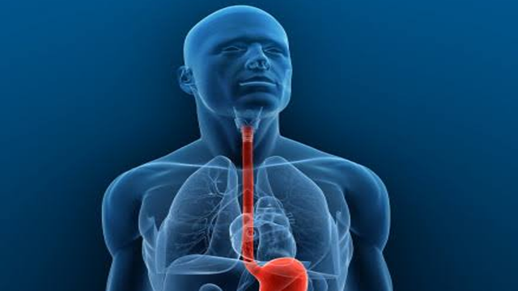
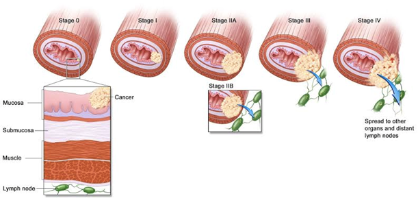
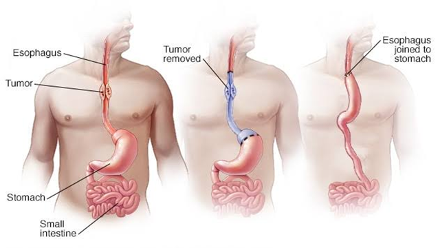

Esophageal cancer :
Esophageal cancer forms inside the esophagus - a hollow, muscular tube about 10 inches long that carries food and drink from the mouth to the stomach.
Cancer can develop when cells in the lining of the esophagus begin to grow and divide abnormally, forming a tumour. Tumours typically start in the innermost layer of the esophagus. They can eventually metastasize (spread) to the lymph nodes and other organs.
Your treatment will depend on the stage of your cancer. You may have surgery, Chemotherapy, Radiation therapy or some combination of these. Endoscopic therapy is also available today for precancerous conditions and very early-stage cancer. Your treatment options will vary based on how localized or advance your disease is.

Symptoms :
In many cases, esophageal cancer is diagnosed after a person begins to notice symptoms. However, early-stage cancer often has no warning signs.
Some of the most common symptoms of esophageal cancer include:
Types of Esophageal Cancer :
Most esophageal cancers can be classified as one of two types: adenocarcinoma or squamous cell carcinoma. A third type of esophageal cancer, called small cell carcinoma, is very rare. These different types of cancer begin in different kinds of cells in the esophagus. They develop in unique ways and call for approaches to treatment that are unique to each person.
Diagnosis :
Before you start any treatment, we'll help you understand your disease clearly. Our doctor will discuss your medical history and give you an overall health exam. We will probably take a sample of the tumour so we can look at the tissue under a microscope.Before you start any treatment, we'll help you understand your disease clearly. Our doctor will discuss your medical history and give you an overall health exam. We will probably take a sample of the tumour so we can look at the tissue under a microscope.
We may also look at the tumour with endoscopic ultrasound, MRI, or CT and PET scans. Getting an accurate diagnosis is the first step toward getting the best cancer care.
Biopsy :
A biopsy is when your doctor looks at your actual tissue. Biopsies for esophageal cancer are usually done with an endoscope (a thin, lighted tube) that lets your doctor see the inside of the esophagus. After you take an anaesthetic to relax you, your doctor puts the endoscope through your mouth and into your esophagus, giving a clear picture of the esophagus and what's inside it.
Your doctor will take a small sample of tissue from the tumour so it can be looked at. After the biopsy, a doctor who specializes in esophageal cancer looks at the cells under a microscope and does other tests to learn more about the tumour.
Stages of Esophageal Cancer :
If a tissue sample from the tumour shows that you have esophageal cancer, the next step is to find out if the cancer has spread, and if so, how far. This process, called staging, is important in deciding which treatment will be best for you.
Staging the tumour requires one or more tests, including:
Your cancer may be staged as follows after imaging results:

Treatment for Esophageal Cancer :
We will develop a comprehensive care plan for you based on the type of condition you have, your age, the presence of other illnesses, and the condition of your overall health. We discuss your options with you at length before deciding on a course of surveillance or treatment.
Our team approach is particularly important in esophageal cancer, which is often best managed using a combination of chemotherapy, radiation therapy and surgery. It enables us to coordinate your treatment using many different strategies.

Surgery for Esophageal Cancer :
Surgery is an important part of treatment for many people with esophageal cancer. Surgery depends on several important factors, including:
For most patients, surgery is not the first treatment, since esophageal cancer isn't usually diagnosed until it is advanced. You may first receive a combination of chemotherapy and radiation therapy to shrink the tumour and make it easier to remove.
Esophagectomy :
In an esophagectomy, the goal is to remove all of the tumour in order to prevent it from returning or spreading.
Your surgeon removes the tumour, part of the esophagus, tissue around the tumour, and lymph nodes where cancer cells may have spread. The stomach is then attached to the remaining part of the healthy esophagus. When the stomach is not available or if it needs to be removed because it also has cancer, portions of the large or small intestine may be used instead so you can eat.
For an Esophagectomy, we can use open surgery or a minimally invasive technique, depending on your case.
Minimally Invasive Surgery - We do many operations for esophageal cancer using minimally invasive techniques, including robotic-assisted surgery. Minimally invasive surgery uses small cuts. Its benefits include:
Chemotherapy for Esophageal Cancer :
Chemotherapy is a drug, or combination of drugs, that goes through the body to kill cancer cells wherever they are. Chemotherapy is an important part of treating esophageal cancer because in most cases people only find the disease after it has spread to other organs. Chemotherapy drugs can shrink the tumour in the esophagus as well as cancerous growths in other areas of the body.
Chemotherapy is used in both adenocarcinoma and squamous cell carcinoma of the esophagus.
Combining Chemotherapy with Other Approaches:
In many people with squamous cell carcinoma of the esophagus, chemoradiation drives the cancer into remission (meaning that although there are no signs of cancer, it is not necessarily cured).
If chemoradiation alone cannot control the cancer, or if you have adenocarcinoma, we may give chemotherapy and radiation to shrink the tumour and make it easier to remove. When used before surgery, this is called induction chemotherapy or neoadjuvant chemotherapy.
The mix of chemotherapy, radiation therapy, and surgery is known as trimodality therapy, and support for this approach is growing. Chemoradiation followed by surgery offers good results for many esophageal cancer patients who have small tumours that have not spread.
Chemotherapy before surgery improves treatment for esophageal cancer in several ways:
Chemotherapy is typically given with radiation therapy for six to ten weeks before surgery.
Radiation Therapy for Esophageal Cancer :
Radiation therapy for esophageal cancer is the use of high-energy beams to shrink or get rid of tumours.
We don't usually use radiation therapy alone to treat esophageal cancer, but it can be important in combination with chemotherapy and surgery. Often, you will begin treatment for esophageal cancer with four to six weeks of radiation therapy along with chemotherapy. This combination treatment is sometimes called chemoradiation.
In some cases, chemoradiation is the primary therapy, and surgery is used only if the tumour does not have a complete response to the chemoradiation. In other cases, chemoradiation just shrinks the tumour before surgery.
Radiation therapy can also be used to relieve pain. For example, it can shrink a tumour so you can swallow better, or it can eliminate spots where the cancer has spread in other parts of the body.